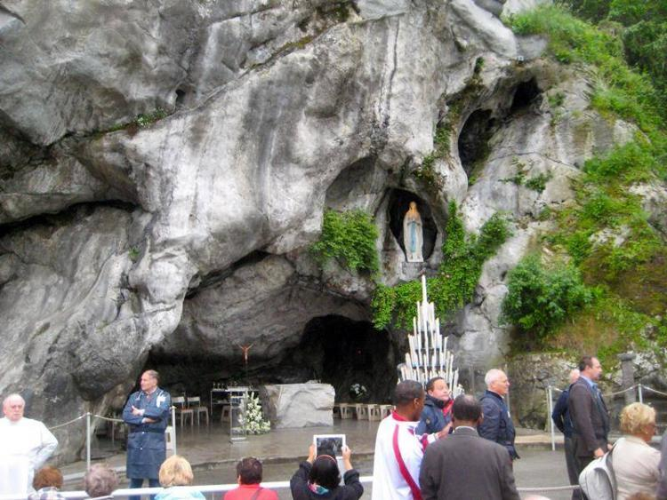
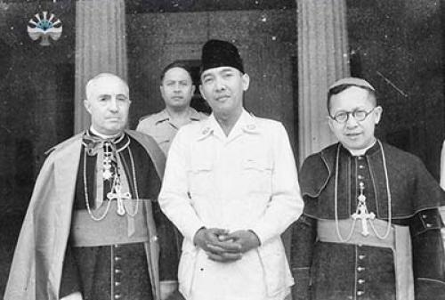
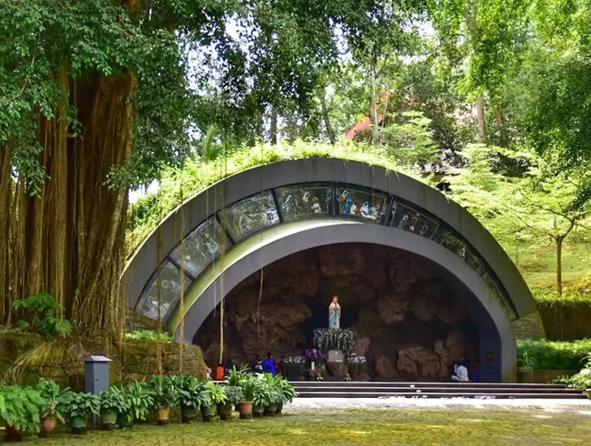
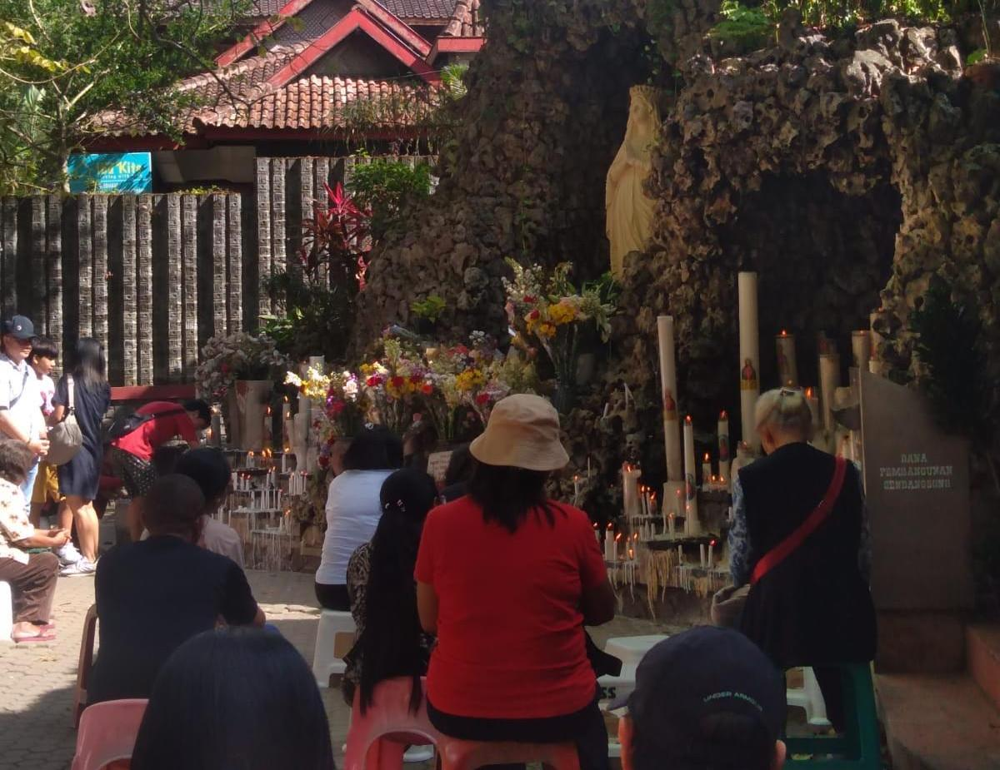
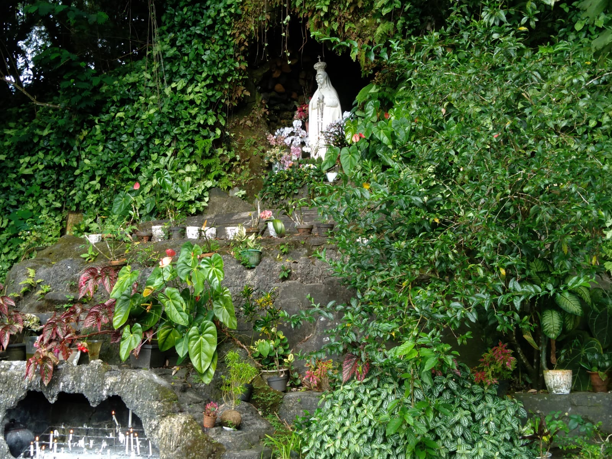
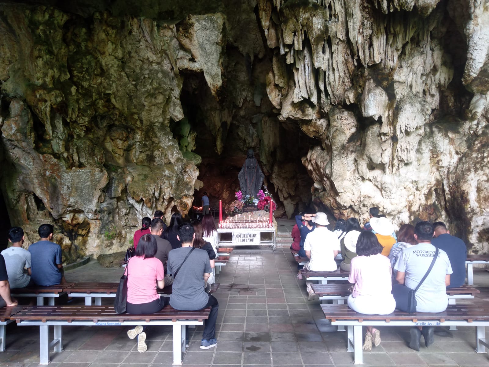

Rekomendasi Goa Maria yang memiliki keindahan menawan di Indonesia
Sejarah Goa Maria

Goa Maria Lourdes, Prancis
Dalam tradisi Katolik Roma, Goa Maria adalah tempat yang dikhususkan untuk melakukan ziarah dan
devosi kepada Bunda Maria, Ibu dari Yesus. Tempat-tempat tersebut menjadi suatu tempat ziarah karena faktor
adanya penampakan dari Bunda Maria sendiri maupun faktor sejarah dari tempat tersebut sebagai tempat
ziarah umat Katolik.
Pada berbagai kesempatan, Bunda Maria beberapa kali menampakkan diri pada orang-orang terpilih. Salah satu
penampakan yang paling terkenal adalah penampakan Bunda Maria kepada Santa Bernadette, salah satu orang kudus di dalam
Gereja Katolik di sebuah goa yang ada di Kota Lourdes, Prancis pada tahun 1858. Tempat itu kemudian menjadi
salah satu tempat ziarah Goa Maria paling populer. Tempat ziarah ini juga yang kemudian menjadi inspirasi
untuk membuat Goa Maria pada berbagai komunitas Katolik yang ada di dunia.
Kekatolikan di Indonesia

Mgr. Georges de Jonghe d'Ardoye (kiri) bersama dengan Presiden Soekarno, dan Mgr. Albertus Soegijapranata
Berdasarkan data resmi Kementerian Agama per tanggal 15 Agustus 2022, jumlah pemeluk agama Katolik
di Indonesia adalah sebesar 8.325.339 jiwa, yang mencakup sekitar 3,12% dari keseluruhan penduduk
Indonesia
Pemeluk agama Katolik terbesar berada di provinsi Nusa Tenggara Timur, yaitu sebanyak 2.906.404 jiwa.
Jumlah ini mencakup 34,91% dari keseluruhan pemeluk agama Katolik Indonesia, 53,56% dari jumlah penduduk Nusa
Tenggara Timur, dan 1,09% dari keseluruhan penduduk Indonesia. Hal tersebut menjadikan Nusa
Tenggara Timur merupakan satu-satunya provinsi dengan mayoritas penduduknya pemeluk agama Katolik.
Rekomendasi Goa Maria
Berdasarkan data dari Kementerian Agama, diketahui bahwa jumlah Umat Katolik di Indonesia cukup banyak.
Hal tersebut membuat devosi kepada Bunda Maria semakin berkembang sehingga dibangunlah beragam Goa Maria
yang indah yang tersebar di seluruh Indonesia. Berikut adalah 4 rekomendasi Goa Maria terindah di Indonesia.
Goa Maria Kaliori

Suasana di sekitar Goa Maria Kaliori
Gua Maria Kaliori terletak di Desa Kaliori, Kecamatan Kalibagor, Banyumas yang berjarak
20 km dari Kota Purwokerto. Gua ini dibangun di atas bukit kecil yang sebelumnya
tandus yang kemudian dilestarikan. Goa Maria ini sendiri dinobatkan sebagai Goa Maria
terbesar dan terlengkap di Indonesia karena tempatnya yang luas dan memiliki fasilitas lengkap seperti
rumah retret, kapel, area jalan salib, pendopo, dan taman doa rosario. Selain itu, patung Bunda
Maria yang ada di tempat ini juga pernah diberkati oleh Paus Yohanes Paulus II dalam suatu Misa Agung.
Goa Maria Sendangsono

Suasana Doa di Goa Maria Sendangsono
Goa Maria ini terletak di Desa Banjaroyo, Kecamatan Kalibawang, Kabupaten Kulon Progo, DI Yogyakarta.
Berdasarkan sejarah, Sendangsono awalnya merupakan tempat pemberhentian para pejalan kaki dari
Kecamatan Borobudur ke Kecamatan Boro, dan sebaliknya. Tempat ini banyak dikunjungi karena
adanya sebuah sendang (mata air) yang muncul di antara dua pohon sono. Hal inilah yang membuat Goa
Maria ini disebut sebagai "Goa Maria Sendangsono".
Goa Maria Fatimah Sawer Rahmat

Suasana Goa Maria Fatimah Sawer Rahmat
Goa Maria Fatimah Sawer Rahmat berada di Desa Cisantana, Kecamatan Cigugur,Kabupaten Kuningan, Jawa Barat.
Goa ini sendiri terletak di ketinggian 700 mdpl dan berada di lereng Gunung Ciremai sehingga
mengharuskan para peziarah untuk mendaki sebanyak kurang lebih 1000 anak tangga dari tempat parkir mobil.
Dinamakan “Sawer Rahmat” karena ada air terjun yang bernama Curug Sawer di dekatnya. Jatuhnya air
pada curug tersebut seperti“disawerkan” atau jatuh terus menerus dari atas.
Sehingga, diharapkan rahmat/berkat akan turun terus-menerus atas umat.
Goa Maria Tritis

Suasanan di dalam Goa Maria Tritis
Goa Maria Tritis terletak di Dusun Bulu, Kabupaten Gunungkidul, DI Yogyakarta. Penamaan gua
ini sendiri berasal dari suara air yang menetes ('tes tes tes tes') dari stalaktit yang dalam Bahasa Jawa
disebut sebagai "tretesing banyu". Biasanya Goa Maria di Indonesia menggunakan goa buatan, tetapi
Goa Maria ini menggunakan goa asli sehingga memancarkan keindahan alam. Para peziarah juga bisa
mangambil air tetesan dari stalaktit untuk mencuci muka dan digunakan sebagai air suci